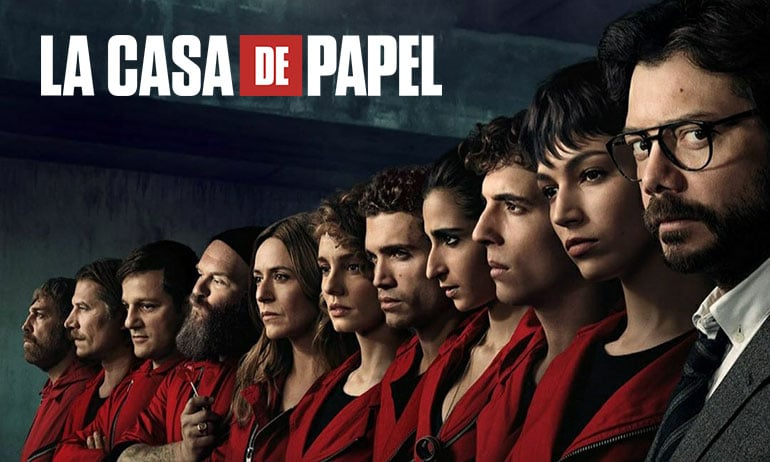
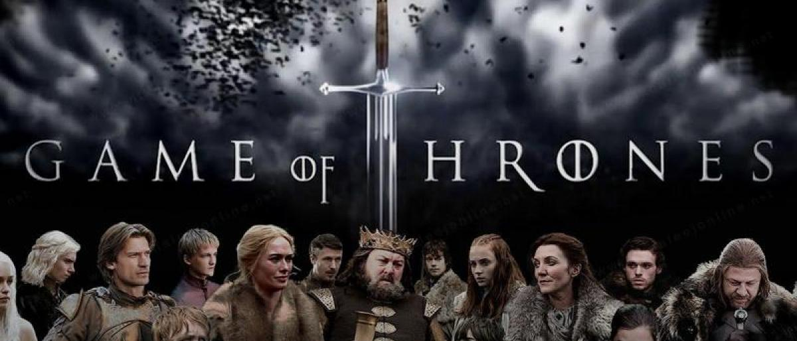

هنالك العديد من الفلام و المسلسلات الجميله ولكن هنا سؤريكم افضل 3 مسلسلات حسب تقييمي :

يقوم رجل غامض يلقب بـ (البروفيسور) بالإعداد لأكبر عملية سرقة أنجزت على الإطلاق، وهي في الأساس كانت حلم والده الذي لم يتمكن من تحقيقها بسبب موته برصاص الشرطة أثناء أحد عمليات سطوه، وذلك بتجنيد 8 أشخاص يدعون بأسماء حركية هي أسماء مدن عالمية، وهؤلاء الأشخاص لهم سوابق إجرامية ومطلوبين أمنيًا وليس لديهم ما يخسرونه. الفكرة هي اقتحام دار سك العملة الإسبانية وطباعة 2.4 مليار يورو ويحتاجون لتحقيق ذلك البقاء هناك 11 يومًا والتعامل مع 67 رهينة ونخبة من قوات الشرطة الإسبانية. تبدأ قصة المسلسل باستيقاظ طوكيو من حلم ومسيرها إلى والدتها للاتصال معها لتقابلها وتودعها، قبل سفرها إلى الصين حيث أنها مطلوبة للشرطة، ودون أن تعلم كانت الشرطة تستمع للمكالمة وتخطط لاحتجازها، وفي طريقها إلى بيت والدتها، الذي كان كمينا لاعتقالها، تقف سيارة حمراء ويتحدث معها رجل غامض لإقناعها بعدم الذهاب والذي اسمته الملاك الحارس فيما بعد، ليعرض عليها عملًا وهو سرقة 2.4 مليار يورو. توافق طوكيو وتذهب معه إلى بيت ريفي برفقة ثمانية أشخاص سيقضون في ذلك المنزل خمسة أشهر من أجل التدريب على سرقة بيت طباعة لأموال في إسبانيا. الأشخاص الثمانية إلى جانب طوكيو هم: البروفيسور المهندس الأول للسرقة برلين القائد الأول في الميدان طوكيو ريو المبرمج والمخترق الذي سيصبح حبيبًا لطوكيو نيروبي الفتاة التي سوف تكون خبيرة طباعة العملات وخبيرة التزوير موسكو المسؤول عن حفر النفق دنفر ابن موسكو هلسنكي خبير أسلحة أوسلو، أخو هلسنكي التوأم وتبدأ رحلة السرقة التي تخللها الكثير من الثغرات أحيانًا ومن الحظ ومن التوقع الصحيح من البروفيسور الذي وضع خطة تفصيلية لكل شيء متوقع حدوثه، وأيضًا من قدرته على التعامل مع كل تلك الشخصيات والأحداث والاختراقات التي مرت عليه، ما عدا وقوعه في حب المحققة راكيل المشرفة على عمليتي القبض والتحقيق في قضيته. كان مقر البروفيسور قريبًا من موقع السرقة ومتصلًا معهم عبر خط هاتفي سلكي لضمان عدم اختراقه من القوات الامنية، أما في الجانب الآخر يتم استدعاء المحققة راكيل المحنكة للتفاوض مع السارقين والذين احتجزوا 67 رهينة من بينهم موظفي موقع السرقة وبعض الشرطة وأيضا طلبة من مدرسة بريطانية كانوا في رحلة ميدانية الذين كان من بينهم ابنة السفير البريطاني التي كانوا يسمونها الرهينة الثمينة والحمل الوديع أحيانًا. تميزت المفاوضات بين البروفيسور وراكيل بالهدوء والكلام المنمق، وكانت تُجرى على مسمع من البيرتو مدير الاستخبارات ومساعدها آنخيل وأفراد الشرطة والقوات الخاصة الذين ساندوها. على مدار الحلقات الـ19 لجزئي للمسلسل، تم الكشف عن الكثير من حياة الخاطفين والمخطوفين، وتم عرض الكثير من الوقائع لأشهر التدريب الخمسة في طليطلة في بيت ريفي منعزل اختاره البروفيسور بعناية ليكون التدريب فعالًا ودون لفت أي نظر. تحدث بعض الأمور التي لم يخطط لها البروفيسور في دار السك مثل الخلافات بين فريق الاختطاف والعلاقة بين طوكيو وريو والتي أثرت على قراراتهم على الرغم من أنها تكبره بـ12 عاما، وأيضا إصابة أوسلو بضربة من المخطوفين الذين ساعدهم أرتورو مدير دار الطباعة، حيث كانت إصابته قاتلة في نهاية الأمر، بعد أن قرر أخيه هلسنكي إنهاء حياته إذا ساءت أحواله بناء على طلبه قبل بدء عملية السرقة. وأيضا حالة الحب التي حدثت بين دنفر ومونيكا التي كانت أحد الرهائن، التي جعلت دنفر يساعد مونيكا لتبقى على قيد الحياة، والعلاقة الحميمية التي حدثت بين برلين وأريادنا التي اضطرت لهذه العلاقة خوفًا من القتل ولتكون محمية. ومحاولات ارتورو مدير الدار وعشيق مونيكا التي تحمل طفلًا منه للهرب وإصابته برصاصة من القناصين. وتصرف برلين في غياب البروفيسور بأن سلم طوكيو للشرطة بعد أن خالفت أوامره وذلك بمساعدة هلسنكي الذي يطيعه بكل شيء، وعودتها لاحقًا بعد وعود البروفيسور لكل من يتم اعتقاله بأنه سيحرره، حيث حررها الصربيون الأربعة (الذي ظهرو في الحلقات الاخيرة والذي كانوا يساعدون البروفيسور في الحفر لنفق الهروب سابقًا) وساعدوها على العودة لدار السك. ومما لم يتم التخطيط له أيضًا، عند عودة طوكيو لدار الطباعة وخلال إطلاق النار من الشرطة لمنعها من الدخول ومن زملائها لكي تدخل، أصيب موسكو بثلاثة رصاصات في معدته أدت إلى موته بعد أربعة عشر ساعة من إصابته في الحلقة الاخيرة. ومن الأحداث التي حدثت دون توقع البروفيسور لها أنه وقع بحب المحققة راكيل وهي كذلك، مما أثر على مسار العملية برمتها، وانتقال راكيل من صف الشرطة إلى صف البروفيسور في الحلقة الاخيرة، وطلبها من زميلها انخيل الذي استيقظ من غيبوبته أن لا يساعد المحققين الذي أبعدوها من التحقيق بعد مشاهدتهم لصور لها في لقاء مع البروفيسور، ووضعوها تحت المراقبة.
هو مسلسل تلفزيوني أمريكي من تأليف الكاتب والمخرج بول شويرينغ. تم عرض مواسمه الأربعة على شبكة فوكس التلفزيونية ابتداءً من 29 أغسطس 2005 وحتى 15 مايو 2009، أما الموسم الخامس فقد تم عرضه في 4 أبريل وحتى 30 مايو 2017. تدور قصة المسلسل حول أخوين، أحدهما حكم عليه بالإعدام لجريمة لم يرتكبها، والآخر يرسم خطة مفصلة لمساعدة أخيه على الفرار من السجن ومسح سجله. تم إنتاج المسلسل من قبل شركة أدلستين-باروس للإنتاج، بالتعاون مع شركة التلفزيون الأصلي، وشركة تلفزيون فوكس للقرن العشرين. رُشحت موسيقى المسلسل التي ألفها الملحن رامين جوادي لجائزة إيمي في عام 2006. في عام 2003 رفضت شبكة فوكس دعم المسلسل معربة عن قلقها وعدم ثقتها من نجاح المسلسلات الطويلة. إلا أنه بعد نجاح عدة مسلسلات مشابهة من بينها المسلسلي لوست و24 دفعها ذلك لتغيير رأيها، وفي عام 2004 قررت دعم الإنتاج والتحضير للمسلسل. تلقى الموسم الأول مراجعات إيجابية، وأداء جيد في التصنيفات. في البداية كان من المقرر أن يتكون الموسم الأول من ثلاثة عشر حلقة، إلا أنه بسبب الشعبية التي حققها تم تمديده ليشمل تسع حلقات إضافية. رُشح مسلسل بريزون بريك لعدة جوائز من بينها جائزة الكرة الذهبية لعام 2005 لأفضل مسلسل دراما، وجائزة إختيار الشعب لعام 2006 لدراما تلفزيونية جديدة مفضلة، وقد فاز بهما. في يناير 2016 أعلنت شبكة فوكس التلفزيونية عن الموسم الخامس من بريزون بريك. وفي 4 أبريل 2017 تم عرضه للمرة الأولى، حيث بثت حلقاته التسعة في أيام الثلاثاء عند الساعة 9:00 مساءً ET. واختتم الموسم في 30 مايو 2017. في يناير 2018 أعلنت شبكة فوكس التلفزيونية عن الموسم السادس من بريزون بريك. في العالم العربي تم عرض المسلسل مترجم على قناة إم بي سي أكشن عام 2007، كما تمت دبلجة المسلسل من قبل مركز الزهرة وتم عرضه حصريا مدبلجا باللغة العربية على قناة سبيس باور عام 2010

تقع أحداث السلسلة في قارّتين خياليتين هما ويستروس وإيسوس في نهاية صيف طويل جداً أمتدّ لعقد قبل بداية أحداثِ الجُزء الأوّل، وقد وُحّدت الممالك السَبع في قارّة ويستروس تحت راية آل تاغاريان. تبدأ أحداث الرواية الأوّلى صراع العروش بعدَ 15 عاماً من مقتل آخر حُكّام آل تاغاريان ونفي ذُرّيته إلى القارة إيسوس، وتنصيب روبرت براثيون حاكِماً للممالك السَبع، وهناك ثلاث مسارات أساسيّة وسائدة في الروايات: المسار الأوّل من القصّة يحكي الصراعَ على سُلطةِ العرش الحديدي القائمَ بعد وفاة الملك روبرت براثيون، يستلم جوفري ابن روبرت الحُكمَ بعده بدعم من عائلتة والدته آل لانستر ويعيث في الأرض الفساد. اللورد إدارد ستارك مُساعد الملك الأوّل يقومُ بالبحث حول حقيقة وفاة روبرت براثيون فيكتشفُ أنّ جوفري وإخوته أولادُ زِنا من والدته سيرسي لانستر وشقيقها جايمي لانستر وينتشر الخبر في أرجاء ويستروس فيعُدم إدارد بتُهمةِ الخيانة. فتبدأ بعضُ المناطق بالانفصالِ عن المملكة حيثُ أعلن الأبن الأكبر لإدارد ستارك الذي يُدعى روب ستارك بانفصاله وأنه ملك الأراضي الشماليّة، بالإضافة إلى بالون جريجوي أسس مملكةً مُستقلّةً في منطقته في جُزر الحديد، وقد سُمّيت بحرب الملوك الخمسة في الرواية الثانية حروب الملوك. يحكي المسار الثاني الأحداثَ الواقعة في الشّمالِ حيثُ المناطقُ هناك دائماً صقيعيّة، حيثُ أن الجدار الشماليّ حمى ويستروس لأكثرَ من ثمانية آلاف سنة حماها من "الآخرين". عند الجدارِ الشماليّ هُناك ما يُعرف بـ حُرّاس الليل ومهمّتهم هي حماية القارة ويستروس من أيّ هجومٍ من قِبَلِ "الهمج" الذين يعيشون بحريّة هُناك. تُسلَّطُ القصة في الجدار على جون سنو وهو ابن إدارد ستارك الغير شرعي والذي انضمّ إلى الحرس بعد ما كانَ يعيشُ في القلعة. يتتبّع المسار الثالث قصّة دينريس تاغارين ابنةَ الملك المقتول وآخر سلالةٍ من آل تاغارين، حيثُ تُحاول استرداد العرشِ المسلوبِ منها وذلك بشرائها جيشاً من العبيد بالإضافة إلى ثلاثةِ تنانين أُعطِيَتهم كهديّة لزفافها وزواجها من قائدِ قبيلة الدوثروكي.